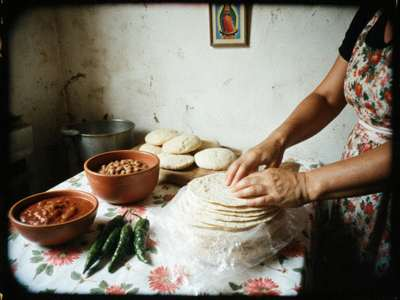

Visitas:
Actualizado 2 de noviembre de 2003 · Hecha por Jesús Jr.
|
¡Hola! Bienvenidos a mi cocina. Me llamo Maricela Ibarra Zazueta, soy de Culiacán, Sinaloa, y desde 2000 vivo en Semiz con mi esposo Jesús, que trabaja en la planta de SuKarne, y nuestros tres hijos. Aquí todos dicen "la Colonia". Los iradíes dicen "Meksikanka". Las señoras rusas dicen "Otkormochny", que era el nombre antiguo. Hello! I am Maricela, from Culiacán, Sinaloa. Since 2000 I live in Semiz with my husband Jesús, who works at the SuKarne plant, and our three kids. When we came, there was NOTHING here to cook Mexican: no corn masa, no real chiles, no tomatillo, no epazote. So we invented. These are the recipes that work with what you can buy at the bazaar in Talas. My comadres asked me to write them down, and my son made the page.  Mi mesa un domingo / My table on a Sunday Tortillas | Salsa | Tamales de cordero | Día de Muertos | Dónde comprar 1. Tortillas de harina (con harina de Talas)La harina de aquí es más fuerte, por eso hay que dejar reposar la masa más tiempo.
Mezclar, amasar 10 minutos, reposar una hora tapada. Bolitas, palote, comal bien caliente. Las vecinas iradíes me enseñaron a usar la sartén de hierro grande de hacer boorsok, y yo les enseñé a hacer tortillas. Ahora la señora Gulnara de enfrente hace mejores tortillas que yo. English: 1 kg flour, 150 g beef lard (or melted sheep tail fat), 2 tsp salt, 1 tsp baking powder, 2 cups warm water. Knead 10 min, rest ONE HOUR (Talas flour is strong). Hot dry pan. 2. Salsa roja sin chiles de verdadAquí el chile es el "chile coreano" rojo seco de las señoras coreanas del bazar, y el chile verde largo de los uzbecos. No es chile de árbol, pero se parece. Asar 6 jitomates, 1 cebolla, 4 dientes de ajo y 5 chiles secos en el comal hasta que estén negritos. Licuar con sal. Si tienen cilantro (en primavera sí hay, se llama kinza), échenle mucho. English: the dried red "Korean pepper" from the Korean ladies at the bazaar works. Char 6 tomatoes, 1 onion, 4 garlic, 5 dried peppers, blend with salt and lots of coriander (kinza). ¡Noticia! Doña Lupe ya está sembrando chile serrano y jalapeño en su huerta con semillas que trajo su hermana. Si sale bien, el año que viene hay chiles de verdad en la Colonia. 3. Tamales de corderoSin masa de maíz, sin hojas de maíz... Usamos harina de maíz amarilla (la del bazar para jarma, molida fina) con manteca y caldo, y en vez de hojas, papel de aluminio o hojas de parra en temporada. El relleno: cordero en salsa roja, porque aquí el cordero es mejor y más barato que el puerco. A mis vecinas les encantan, dicen que son "manty mexicanos". English: fine yellow cornmeal + lard + broth instead of masa; foil or vine leaves instead of corn husks; lamb in red salsa. My neighbours call them "Mexican manty". 4. Día de Muertos en SemizEste año (2003) hicimos el altar en el salón de la parroquia, junto a la Misa en español. Muchos de nosotros tenemos a nuestros muertos lejos, en Sinaloa, en Durango, y no podemos ir al panteón. Pusimos las fotos, cempasúchil de papel (no hay flor de verdad, ¡usamos caléndulas de los jardines rusos!), pan de muerto, y también boorsok, porque ya hay matrimonios con iradíes y sus muertos también cuentan. Los iradíes también recuerdan a sus difuntos con comida. Somos parecidos. English: our Day of the Dead altar this year at the parish hall, with paper marigolds and real calendula from the Russian gardens, pan de muerto and also boorsok, because some of us are married into Iradi families now and their dead count too. 5. Dónde comprar / Where to buy
Escríbanme / write me: maricela_semiz@attelkom.net |